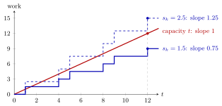

Server Load¶
Definition¶
For a single-server queue with arrival rate , mean inter-arrival time , mean service time and service rate , the server load is
For a queue, in which batches arrive at rate and contain on average jobs, each job needs on average of service, and each of the identical servers serves on average jobs per service time, the load is
Interpretation¶
The load compares the work that arrives with the work the station can do. Each time unit brings on average jobs of work each, while one server clears one unit of work per unit time, so is the offered work per unit time and per unit of capacity.

The figure is Example 2. Each arrival raises the blue staircase by its service time. The red line is the work one server can clear by time . With service time the staircase grows at average slope and falls further and further below the line; at it stands at against . With service time it grows at average slope and pulls away above the line, reaching : work then accumulates faster than the server can remove it.
The load is computed from the offered arrivals, including jobs that are later blocked, so it can exceed . It is a long-run average: a week in which capacity drops below demand does not by itself make . In the general formula the batch size multiplies the work per arrival, while and multiply the capacity.
In the discrete-time models of Week 2, means negative queue drift, .
Common slips: the load is not always at most (TF 4.1.5); it is the utilization that is. Equality of the arrival and departure rates does not mean (TF 4.1.3); it means rate stability, which needs .
Key Results¶
- Offered work per unit time: since and , the work brought in satisfies .
- Rate stability requires , that is, . If and no jobs are blocked, the queue grows without bound and .
- In a rate-stable system the load equals the server utilization ; the two differ when or when jobs are blocked (Section 4.1).
- Small excess capacity makes queues long and variable. With arrivals per period, raising the mean capacity from to per period, that is, lowering from to , cut the simulated mean queue length from to and its variance from to (Section 2.3).
- For the queue the load also fixes the mean busy period, , and it is the first ingredient of the waiting-time approximations of Week 6.
Examples¶
1. One server or two. In a tool crib, customers arrive at per hour and service takes on average minutes (TF 5.2.3). With one employee, , so the queue cannot be rate-stable. With employees, . By contrast, jobs per hour with minutes gives for a single server.
2. Load as work per unit time. Jobs arrive at , so . By , jobs have arrived. With service time they bring units of work, and . With service time they bring units, and : more work arrives than one server can do in that time.
3. Psychiatrists. About patients per week need an intake. Under the balanced plan with rotating holidays, the five psychiatrists have an average capacity of intakes per week (Section 2.1), so . A load this close to explains why the simulated queue makes long excursions however the holidays are planned.
4. Batches and ovens. Orders of on average pizzas arrive at per hour. Two ovens () each bake on average pizzas per cycle of hour. Then , the same as pizzas offered per hour against a capacity of . Forgetting would give and wrongly suggest a hopeless overload.
Prerequisites¶
Related Concepts¶
Sources¶
- Stochastic Operations Research · Week 3
- N. D. van Foreest, Sample Path Analysis and Simulation of Stochastic Systems, Section 4.1
Aliases: load, offered load, traffic intensity, rho, load of a station Keywords: \rho = \lambda \mathbb{E}[S], \rho = \lambda/\mu, \rho = \mathbb{E}[S]/\mathbb{E}[X], \rho = \lambda \mathbb{E}[S]\mathbb{E}[B]/(c\,\mathbb{E}[C]), offered work, overload, G^B/G^C/c queue Symbols: delta, lambda, mu, rho, sum
Last updated: 29 October 2026 20:42
Server LoadAvailabilityBusy PeriodRate StabilitySakasegawa's FormulaServer SetupServer UtilizationSetup Effective Service TimeArrival and Departure RatesService RateKendall's NotationQueue DriftM/M/1 QueueBatch-Arrival Queue